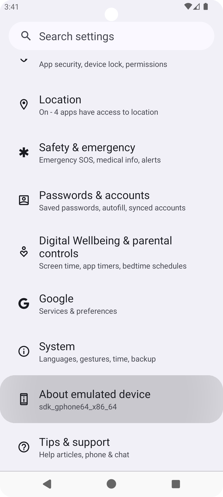
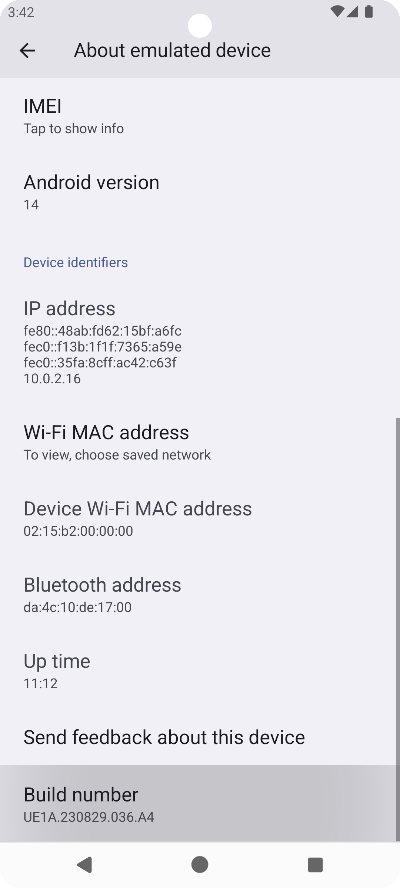
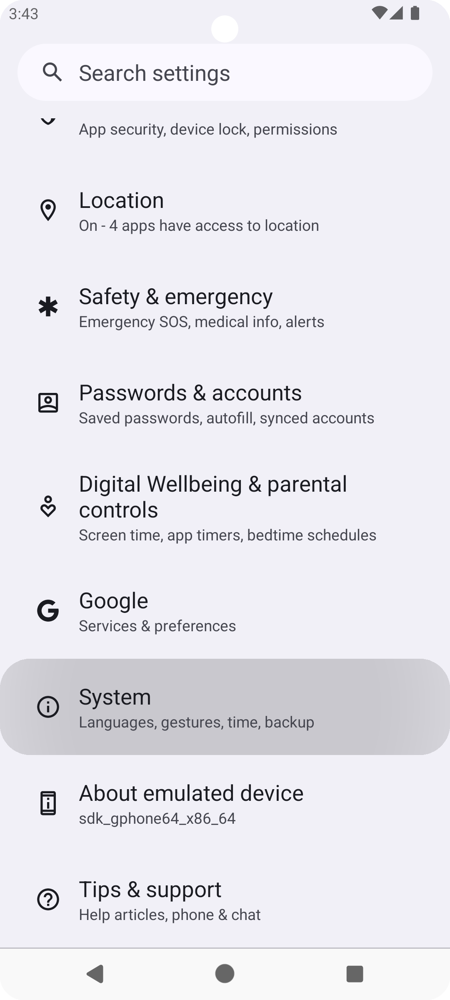
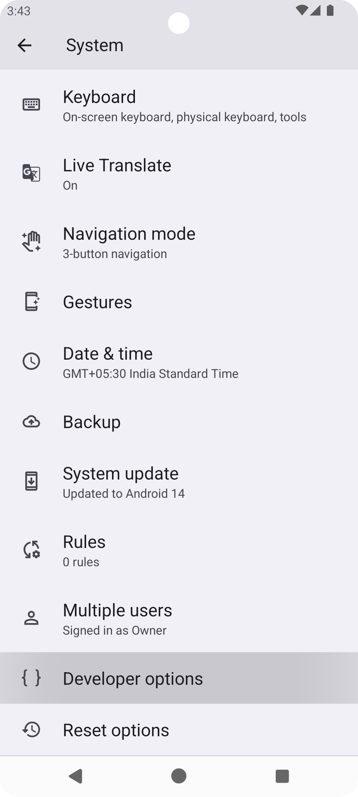
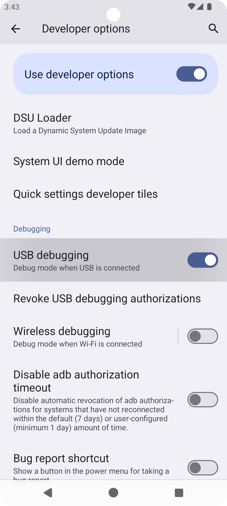
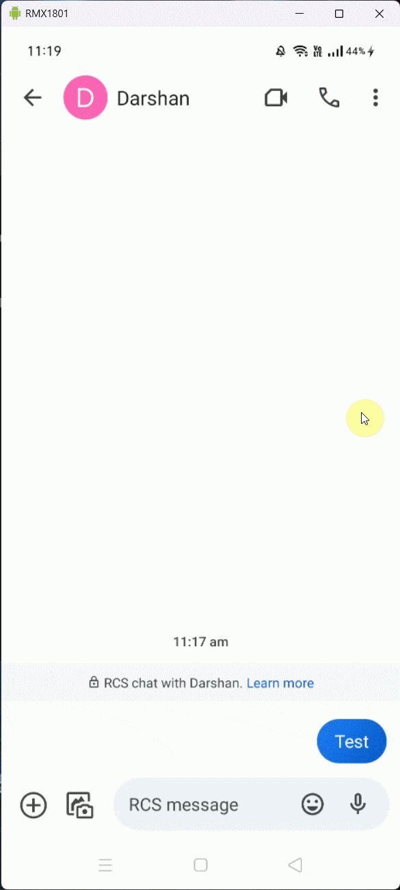

FAQs
Why are my messages stuck in Pending status?
Make sure you turned on the service by using the Play button from the Android app. If it still doesn't work, then make sure the app is whitelisted in any background work restricting functionality as shown here.
I'm getting the frequent prompt with the message "App is sending large number of messages" How can I stop it?
By default, some Android device manufacturers impose a restriction that limits sending more than 30 SMS messages within 30 minutes. Fortunately, these limits (both message count and time frame) can be manually adjusted to bypass the restriction.
Enable USB Debugging
First, activate USB Debugging on your Android device. On modern Android versions, this option is hidden under the Developer Options menu.
How to Unlock Developer Options:
Go to Settings > About phone.
Scroll down and tap the Build number several times until you see a notification confirming you've enabled developer mode.


Access Developer Options
Return to Settings and navigate to System > Advanced > Developer options (or find Developer Options directly on older Android versions).
Look for USB debugging under the Debugging section and toggle it on.
Confirm the warning message to proceed.
If available, also enable the Disable permission monitoring option.



Install ADB Drivers
Before connecting your phone, you may need to install the necessary ADB driver.
Modify SMS Limit
Connect your phone to the PC via a USB cable. Authorize USB Debugging when prompted, ensuring you trust the computer.
Download the ZIP file from here and extract it to your Windows PC. Open the "increase-sms-limit" folder and double-click the increase-sms-limit.bat file. This script should raise your device’s SMS limit to bypass the restrictions.
Note: You may have to do this again if you restart your device. Also, this method may not work on all devices. If it fails, unfortunately, there's no other workaround available.
Why aren't my messages received by the receiver?
There are a number of reasons this can happen.
Rate Limit: This issue may occur if messages are being sent too quickly. Try increasing the delay between messages.
Blocked: It can also happen if your SIM has been blocked. You can use ranged delay in conjunction with spintax to prevent this.
E.164 Formatting: It is recommended to use e.164 phone number formatting to send messages.
MMS: If you are sending MMS, then ensure the Android app is set as the default messaging app. If it still doesn't work, then it can mean that your network operator disabled the MMS.
Insufficient Balance: Ensure your account has enough credit to send SMS or MMS.
Why are my messages stuck in Processed status?
Processed status indicates that a Device processed a message. That means it executed the system function to send the message. App doesn't have control of the message from this point. It is completely up to the network operator to send the status of the message after this. Try out the suggestions outlined in Why aren't my messages received by the receiver? to prevent this issue.
How can I do multistep USSD request?
First, make sure you set the USSD delay to 0 on the profile page. Usually, when you send the first USSD pull request, it waits for 30 seconds for the next input. If you make another request in this time frame, then it will consider it as an input to the previous request. Although, it will work only if your input to the previous request is only one digit long. It is one of the limitations of the USSD function provided by the Android SDK. It doesn't support taking input longer than one digit. The app can't overcome this because the app relies on the Android SDK to perform this.
To overcome this limitation, you can also convert the multistep code to a single step. For example, if you have a USSD code like *786# and you want to send 1 as a reply to it, then you can use *786*1# to see if it works. You can also do this for more than one input. For example, if you have a USSD code like *141# and you want to send 4 as the first input and 2 as the second, then you can use *141*4*2# to see if it works. This may work differently for your USSD provider. You can ask your USSD provider to see if specific code can be done in a single step.
My message has Sent or Delivered status, but it wasn't delivered to the receiver. Why is that?
Sent, Failed and Delivered status is given by your network operator. If you can send SMS or MMS normally from a messaging app, then you should be able to do it with this app, because all SMS-related apps on the phone use the same system function to send messages. Make sure your SIM plan allows you to send SMS or MMS. Default messaging allows you to send RCS messages too, so make sure you don't confuse it with SMS or MMS.
I received a message, but it doesn't show up in SMS Gateway. What should I do?
Please make sure the message you received is SMS or MMS. This app can only read SMS and MMS messages right now, so any other type of messages won't show up in the app. You can check the message type as shown below.

Turn off RCS. If both Sender and Receiver have RCS turned on and receiver uses a messaging app to reply to your SMS message. It will be most likely to be an RCS message which this app can't read. You can follow How to turn off RCS chats to turn off RCS.
It can also be an issue with sync failure. You can check out the device logs from the Devices page to see if that's the case. In that case, the app will try to sync it again after some time or with the next message, whichever happens earlier.
How to prevent the default Messaging app from storing every message I send?
You can avoid storing the sent messages by setting the app as default. Open the Settings page on the app by tapping the ⚙️ icon and clicking on Make Default.
Making the app default for SMS will prevent the storage of both sent and received messages, so make sure you have the Sync Received option turned on too.
Unset app as the default app
If you want to revert the above changes, then you can open your primary messaging app, and it will prompt you to make it a default app. Choose Yes and it should set it as default.
Why isn't this app available on Play Store?
There was a policy change by Google for apps that require SMS or Call Log permissions. This app uses these permissions. It is not a traditional messaging app and requires login to work, so it falls into the Invalid use cases category. You can read more about it here. You can check out the Getting Started section to see how to install the app manually.
I am getting "App blocked to protect your device" while installing the app? Why is that and how to solve it?
Google Play Protect may block the app because it is not installed from Play Store and requests RECEIVE_SMS permission. You can read more about it here. This does not mean the app is harmful or malicious. It is just a precautionary measure taken by Google to protect your device from potentially harmful apps.
There are two scenarios that can occur depending on the region and device. Follow the steps mentioned below based on the scenario you are facing.
App is Completely Blocked (No "Install Anyway" Button)
If the app is permanently blocked in your region or device, follow these steps to disable Play Protect temporarily:
Open Google Play Store on your device.
Tap on your profile icon in the top right corner.
Select Play Protect.
Tap on the ⚙️ in the top right corner.
Toggle off the Scan apps with Play Protect option.
Select Pause to temporarily disable the feature or Turn off to disable it completely.
Now, try installing the app again. It may tell you to enable Play Protect again, but make sure to ignore that and continue with the installation.
Once the app is installed, you can re-enable the Play Protect feature by following the same steps and toggling it back on.
You See "Install Anyway" Option
If your device shows the “Install anyway” option, follow these steps:
On the "App blocked to protect your device" screen, tap on Install anyway at the bottom. Sometimes it may be hidden under More details.
The app should start installing.
There are high number of failed messages when I try to send messages in bulk. What should I do?
Try out the suggestions outlined in Why aren't my messages received by the receiver? to prevent this issue.
It will also include an error code if the message was sent from the SIM. These codes typically appear as GENERIC_FAILURE[3], where GENERIC_FAILURE indicates a general error, and the number in square brackets represents an extra error code. Refer to the tables below to understand the meaning of the general error and the corresponding extra error codes.
General Errors
Error Constant | Description |
|---|---|
| The message could not be delivered to the recipient. |
| A general failure occurred during the sending process. |
| The device's radio is turned off, preventing message transmission. |
| The Protocol Data Unit (PDU) provided is null or invalid. |
| The device is not currently registered on any network. |
| The sending limit has been exceeded. |
| The Fixed Dialing Number (FDN) check failed. |
| Sending to the short code is not allowed. |
| Sending to the short code is never allowed. |
| The radio is not available for sending messages. |
| The network has rejected the message. |
| Invalid arguments were provided to the sending function. |
| The device is in an invalid state for sending messages. |
| There is not enough memory to send the message. |
| The SMS format is invalid. |
| A system error occurred during the sending process. |
| A modem error occurred during the sending process. |
| A network error occurred during the sending process. |
| An encoding error occurred during the sending process. |
| The SMSC (Short Message Service Center) address is invalid. |
| The operation is not allowed. |
| An internal error occurred during the sending process. |
| There are no resources available to send the message. |
| The message sending was cancelled. |
| The request is not supported. |
| No Bluetooth service is available for sending the message. |
| The Bluetooth address provided is invalid. |
| The Bluetooth connection was disconnected during the sending process. |
| An unexpected event occurred, stopping the sending process. |
| SMS sending is blocked during an emergency situation. |
| The message send retry has failed. |
| A remote exception occurred during the sending process. |
| There is no default SMS application set on the device. |
| The Radio Interface Layer (RIL) reports that the radio is not available. |
| The RIL reports that the SMS send failed and a retry is needed. |
| The RIL reports that the network has rejected the message. |
| The RIL reports that the device is in an invalid state for sending messages. |
| The RIL reports that invalid arguments were provided to the sending function. |
| The RIL reports that there is not enough memory to send the message. |
| The RIL reports that the request rate has been limited. |
| The RIL reports that the SMS format is invalid. |
| The RIL reports that a system error occurred during the sending process. |
| The RIL reports that an encoding error occurred during the sending process. |
| The RIL reports that the SMSC address is invalid. |
| The RIL reports that a modem error occurred during the sending process. |
| The RIL reports that a network error occurred during the sending process. |
| The RIL reports that an internal error occurred during the sending process. |
| The RIL reports that the request is not supported. |
| The RIL reports that the modem is in an invalid state for sending messages. |
| The RIL reports that the network is not ready for sending messages. |
| The RIL reports that the operation is not allowed. |
| The RIL reports that there are no resources available to send the message. |
| The RIL reports that the message sending was cancelled. |
| The RIL reports that the SIM card is absent. |
| The RIL reports that simultaneous SMS and call operations are not allowed. |
| The RIL reports that access is barred. |
| The RIL reports that the message sending is blocked due to an ongoing call. |
Extra Error Codes
Extra Error Code | Description |
|---|---|
1 | The destination requested by the Mobile Station cannot be reached because, although the number is in a valid format, it is not currently assigned (allocated). |
8 | The MS has tried to send a mobile originating short message when the MS’s network operator or service provider has forbidden such transactions. |
10 | The outgoing call barred service applies to the short message service for the called destination. |
17 | The MSC cannot service an MS-generated request because of PLMN failures, e.g., problems in MAP. |
21 | The equipment does not wish to accept this short message, although it could have accepted it since the equipment is neither busy nor incompatible. |
27 | The destination indicated by the Mobile Station cannot be reached because the interface to the destination is not functioning correctly. This indicates a signaling message was unable to be delivered to the remote user, e.g., a physical layer or data link layer failure at the remote user, user equipment offline, etc. |
28 | The subscriber is not registered in the PLMN (i.e., IMSI not known). |
29 | The facility requested by the Mobile Station is not supported by the PLMN. |
30 | The subscriber is not registered in the HLR (i.e., IMSI or directory number is not allocated to a subscriber). |
38 | The network is not functioning correctly and the condition is likely to last a relatively long period; immediately reattempting the short message transfer is unlikely to be successful. |
41 | The network is not functioning correctly but the condition is not likely to last long; the Mobile Station may try another transfer attempt almost immediately. |
42 | The short message service cannot be serviced because of high traffic. |
47 | Resources unavailable when no other cause applies. |
50 | The requested short message service could not be provided by the network because the user has not completed the necessary administrative arrangements. |
69 | The network is unable to provide the requested short message service. |
81 | The equipment has received a message with a short message reference not currently in use on the MS-network interface. |
95 | An invalid message event when no other cause in the invalid message class applies. |
96 | A mandatory information element is missing and/or has a content error (the two cases are indistinguishable). |
97 | A message type is not recognized either because it is not defined or is not implemented by the equipment. |
98 | Message not compatible with short message protocol state. |
99 | The message includes information elements not recognized because the element identifier is not defined or not implemented by the equipment. |
111 | A protocol error event when no other cause applies. |
127 | Interworking with a network that does not provide causes for actions it takes; thus, the precise cause cannot be ascertained. |
128 | Telematic internetworking not supported. |
129 | Short message type 0 not supported. |
130 | Cannot replace short message. |
143 | Unspecified TP-PID error. |
144 | Data code scheme not supported. |
145 | Message class not supported. |
159 | Unspecified TP-DCS error. |
160 | Command cannot be actioned. |
161 | Command unsupported. |
175 | Unspecified TP-Command error. |
176 | TPDU not supported. |
192 | SC busy. |
193 | No SC subscription. |
194 | SC System failure. |
195 | Invalid SME address. |
196 | Destination SME barred. |
197 | SM rejected due to duplicate SM. |
198 | TP-VPF not supported. |
199 | TP-VP not supported. |
208 | SIM SMS storage full. |
209 | No SMS storage capability in SIM. |
210 | Error in MS. |
211 | Memory capacity exceeded. |
212 | SIM application toolkit busy. |
213 | SIM data download error. |
255 | Unspecified error cause. |
300 | ME failure. |
301 | SMS service of ME reserved. |
302 | Operation not allowed. |
303 | Operation not supported. |
304 | Invalid PDU mode parameter. |
305 | Invalid text mode parameter. |
310 | SIM not inserted. |
311 | SIM PIN required. |
312 | PH-SIM PIN required. |
313 | SIM failure. |
314 | SIM busy. |
315 | SIM wrong. |
316 | SIM PUK required. |
317 | SIM PIN2 required. |
318 | SIM PUK2 required. |
320 | Memory failure. |
321 | Invalid memory index. |
322 | Memory full. |
330 | SMSC address unknown. |
331 | No network service. |
332 | Network timeout. |
340 | No +CNMA expected. |
500 | Unknown error. |
512 | User abort. |
513 | Unable to store. |
514 | Invalid status. |
515 | Device busy or invalid character in string. |
516 | Invalid length. |
517 | Invalid character in PDU. |
518 | Invalid parameter. |
519 | Invalid length or character. |
520 | Invalid character in text. |
521 | Timer expired. |
522 | Operation temporary not allowed. |
532 | SIM not ready. |
534 | Cell broadcast error unknown. |
535 | Protocol stack busy. |
538 | Invalid parameter. |